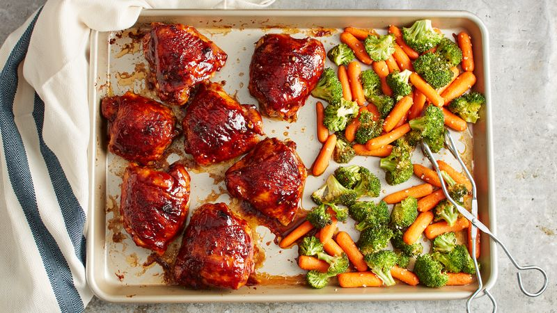

BBQ Chicken and Veggies

Description
Indulge in a mouthwatering and hassle-free keto-friendly meal with our Sheet Pan BBQ Chicken, Roasted Broccoli, and Carrots recipe. This single sheet pan wonder delivers the perfect combination of smoky, tender chicken with a tangy BBQ glaze, paired with perfectly roasted broccoli and carrots. It's a low-carb, high-flavor delight that's incredibly easy to prepare, making it a go-to dish for busy weeknights.
Ingredients
- 2-4 thin sliced Chicken Breasts
- 1 cup of Broccoli Florets
- 1 cup of Baby Carrots
- 1 Tbsp of Chili Powder
- 1 tsp of Pepper
- 1 tsp of Salt
- Sugar free BBQ Sauce
- 1 tsp of Paprika
- 1 Tbsp of Olive Oil
- 1 Tbsp of Minced Garlic
- 1 Tbsp of Garlic Powder
Steps
- Pre Heat oven to 400 degrees fahrenheit
- Mix veggies in bowl with olive oil and seasonings
- Season both sides of chicken with salt and pepper
- Lather chicken in BBQ sauce and place on one side of sheet pan
- Spread veggies on beside chicken on the sheet pan
- Place in oven and cook for 45 minutes or until chicken is cooked through
- Serve hot